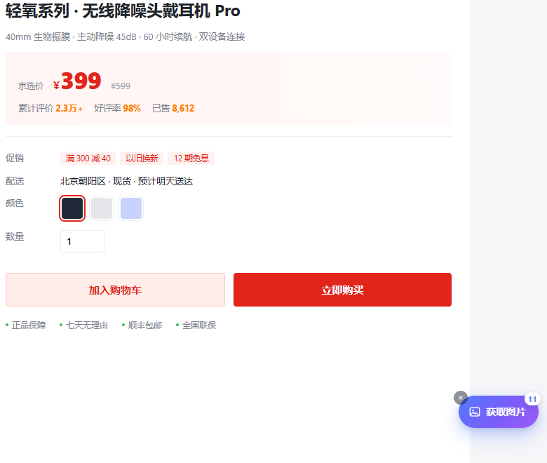

背景：把图片“干净地”拿下来
电商详情页的图片分散在主图、缩略图、详情长图、懒加载属性和背景图里。 逐张右键保存既慢又容易漏，格式还可能是 JPG、WebP、PNG 混在一起。 课程需求是做一个浏览器插件，把这些图片集中展示并批量下载为 PNG。
我没有把它停在“能抓图”这一层。第一版上线后，最直接的问题不是抓不到，而是抓得太多： 推荐商品、买家秀、店铺横幅、二维码都进了画廊。于是有了 v1.1 的相关性过滤返工。
我做了什么
- 扩展端：Manifest V3 + content script，在淘宝、天猫、京东、拼多多详情页注入悬浮按钮。
- 提取核心：扫描
img、srcset、data-src、background-image、JSON-LD 与og:image，补全相对路径并去重。 - 相关性过滤：结合页面区域、商品链接、图片比例与 alt 文案，默认只保留商品主图、详情图和试穿图。
- 画廊：网格预览、尺寸筛选、全选 / 反选、单张放大，以及「商品图 / 全部」切换。
- 下载：OffscreenCanvas 转 PNG，逐张进度与结果反馈，文件名按
商品图_001.png编号。 - 官网与发布：静态宣传站、安装说明、GitHub Release、GitHub Pages 部署与线上验证。
三个关键问题
1. 下载一直“失败”，其实文件已经下好了
后台等待下载完成时，把 Chrome 的 in_progress 状态误判成了中断，于是不断重试，
一次操作产生多份重复文件。修复方式是只认 complete / interrupted
两个终态，中间状态不再触发结束。
2. 无关图片也进来了
尺寸过滤只能挡住图标和小图，挡不住同样高清的推荐商品和买家秀。最终方案是把图片放回页面结构里： 先排除推荐 / 评价 / 广告区域与指向其他商品的链接，再用图片比例、alt 和所在容器判断相关性。 默认只显示商品图，但保留「全部」作为可恢复的出口。
详细过程写在 这篇复盘里。
3. 发布不是 push 就结束
GitHub Pages 首次部署时，Actions 在跑但 Pages 还没启用，结果部署失败；
另外用 PowerShell 写中文仓库简介时出现过 ??? 编码问题。
这些都不是“代码 bug”，但会直接影响项目能不能被访问、被理解。
解决后我把检查清单固定下来：状态码、资源、移动端、控制台、下载文件，逐项验证。

结果
在包含真实干扰项的模拟详情页里，扫描到 19 张候选图，默认保留 11 张商品图 （含一张模特试穿图），过滤 8 张推荐 / 买家秀 / 广告 / 二维码。 11 张商品图全部成功转换为 PNG，其中 1800×1800 的大图约 4.7MB。
扩展在模拟的 item.jd.com 详情页上完成了真实 manifest 的自动注入测试；
线上官网与下载地址均可访问。需要说明的是，真实淘宝 / 京东页面需要登录且存在反爬，
本项目没有做真实账号下的完整人工验证，平台改版后也可能需要更新页面规则。
链接
项目周期：2026 年 10 月 · 技术栈：Manifest V3 / JavaScript / Canvas / Playwright / GitHub Pages